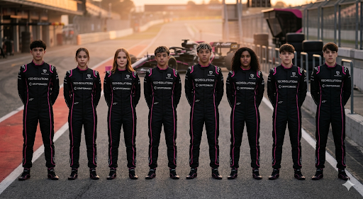
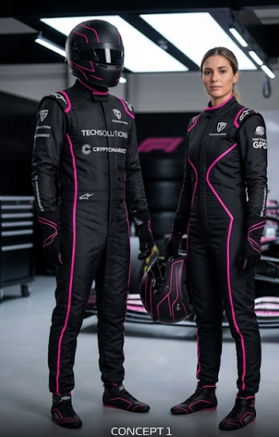

Diretamente dos boxes para o futuro do automobilismo, esta equipe representa uma nova geração de talentos que une precisão, disciplina e ambição. Jovens, determinados e altamente preparados, esses oito pilotos chegam às pistas com um único objetivo: competir no mais alto nível e deixar sua marca na história. Vestindo as cores preto e rosa, símbolo de inovação e identidade forte, o time carrega consigo o apoio de parceiros como TechSolutions e Cryptonagec, refletindo uma fusão entre tecnologia de ponta e desempenho esportivo. Cada integrante traz características únicas — desde controle técnico refinado até agressividade estratégica nas corridas — formando um conjunto equilibrado e extremamente competitivo. Mais do que apenas uma equipe, eles são um projeto de excelência. Treinados para lidar com pressão, velocidade e decisões em frações de segundo, esses pilotos demonstram maturidade além da idade e uma mentalidade focada em evolução constante. Com o carro alinhado no grid e os olhos voltados para o horizonte, essa equipe não está apenas participando… está se preparando para dominar.

Apresentando o uniforme oficial da Sakura Racing — uma fusão perfeita entre tecnologia, identidade e performance. Projetado para acompanhar a intensidade das pistas, o macacão traz como base o preto profundo, simbolizando precisão, foco e domínio. As linhas em rosa neon percorrem o traje de forma estratégica, destacando a silhueta dos pilotos e criando uma identidade visual forte, moderna e imediatamente reconhecível. Cada detalhe vai além da estética. O design ergonômico garante mobilidade total dentro do cockpit, enquanto os materiais de alta performance oferecem proteção, leveza e resistência, atendendo aos mais altos padrões do automobilismo. Os patrocinadores, posicionados com equilíbrio e destaque, reforçam a conexão entre inovação tecnológica e esporte de elite, representando parceiros que impulsionam a equipe dentro e fora das pistas. Mais do que um uniforme, este é um símbolo de atitude. Ele representa uma equipe jovem, ousada e preparada para competir em alto nível — onde estilo e desempenho caminham lado a lado.

Velocidade, identidade e tradição se encontram na nova era da Sakura Racing. Este capacete representa mais do que proteção — é a assinatura visual de uma equipe que une elegância e agressividade dentro das pistas. Com uma base em preto intenso e detalhes em rosa vibrante, o design cria um contraste marcante que transmite energia, precisão e personalidade. As linhas fluidas percorrem toda a estrutura, remetendo à velocidade e ao movimento constante, enquanto o emblema frontal reforça a essência da Sakura Racing: disciplina, foco e evolução contínua. Inspirado na delicadeza e força simbólica da flor de cerejeira, o conceito combina tradição com um espírito competitivo moderno. O visor espelhado completa o visual com um toque futurista, refletindo não apenas a luz da pista, mas também a ambição de quem o veste. Na Sakura Racing, cada detalhe importa — e este capacete é a prova de que estilo e performance podem andar lado a lado rumo à vitória.

Diretamente do centro de inovação da equipe, nasce o novo carro da Sakura Racing — uma máquina projetada para redefinir desempenho, precisão e identidade nas pistas. Com um design agressivo e aerodinâmica refinada, o modelo combina eficiência extrema com uma presença visual marcante. O preto fosco domina a carroceria, transmitindo força e elegância, enquanto as linhas em rosa neon percorrem cada curva do carro, destacando sua silhueta e reforçando a identidade única da equipe. Cada detalhe foi pensado para performance: do nariz afilado que corta o ar com precisão milimétrica, aos sidepods esculpidos para maximizar o fluxo aerodinâmico, até a asa traseira otimizada para equilíbrio perfeito entre velocidade e estabilidade. Mais do que um carro, este é um símbolo de uma nova geração. Integrando tecnologia avançada e engenharia de ponta, o projeto reflete a filosofia da equipe — inovação constante, mentalidade competitiva e busca incansável pela vitória. Com esse carro, a Sakura Racing não entra apenas na pista… ela chega para disputar cada curva, cada milésimo e cada posição no topo.